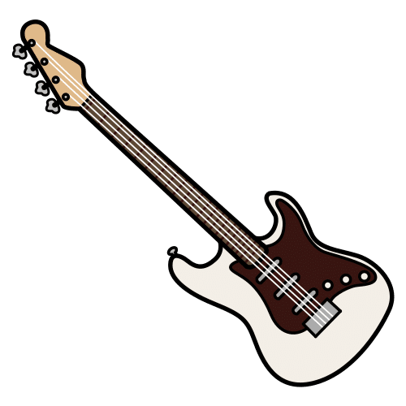
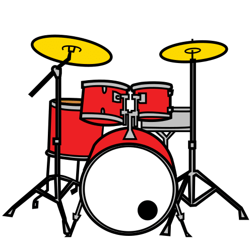
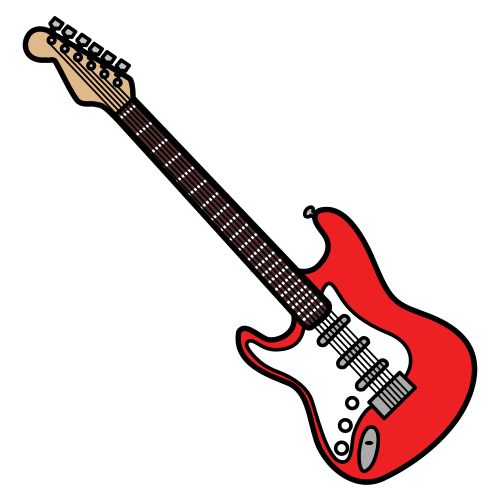
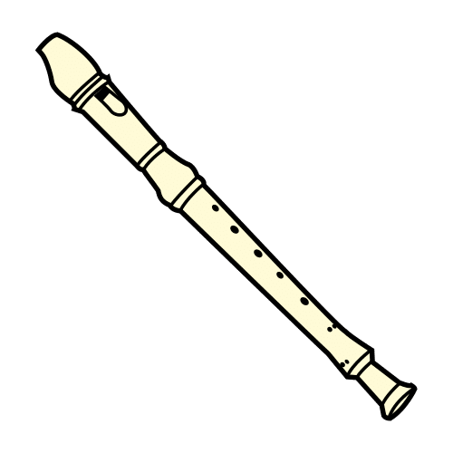
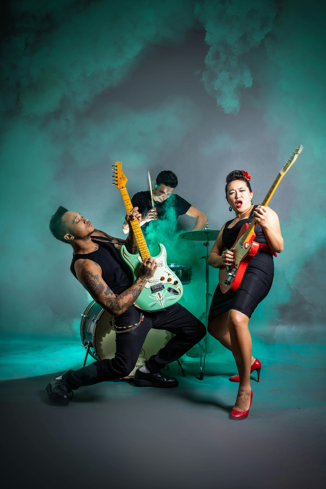
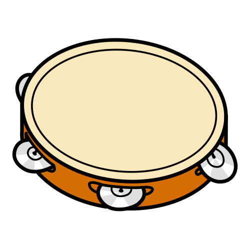

Dictionary
Bass

The bass is a big guitar with a deep sound. It has four strings.
El bajo es una guitarra grande con un sonido profundo. Tiene cuatro cuerdas.
She plays the bass in the school band.
Ella toca el bajo en la banda de la escuela.
Spanish word:
Bajo
Audio:
Classical (music)
 Definition:
Definition:
Classical music is a musical genre played with instruments like the piano, violin, or flute.
La música clásica es un género musical que se toca con instrumentos como el piano, el violín o la flauta.
Example:
I listen to classical music when I do my homework.
Escucho música clásica cuando hago mis tareas.
Spanish word:
Música clásica
Audio:
Disco (music)
 Definition:
Definition:
Disco music is a style of dance music from the 1970s with a steady beat and strong bass.
La música disco es un estilo de música bailable de los años 70 con ritmo constante y bajo fuerte.
Example:
My parents dance to disco music at home.
Mis padres bailan música disco en casa.
Spanish word:
Música disco
Audio:
Drums
Definition:
Drums are a musical instrument you play by hitting different parts with sticks or hands.
La batería es un instrumento musical que se toca golpeando diferentes partes con baquetas o con las manos.
Example:
He plays the drums in a rock band.
Él toca la batería en una banda de rock.
Spanish word:
Batería
Audio:
Electric guitar
Definition:
It is a musical instrument that makes sound using electricity and is played with fingers or a pick.
Es un instrumento musical que produce sonido con electricidad y se toca con los dedos o una púa.
Example:
My brother plays the electric guitar in his music class.
Mi hermano toca la guitarra eléctrica en su clase de música.
Spanish word:
Guitarra eléctrica
Audio:
Maracas
Definition:
They are a musical instrument you shake to make sound, often used in Latin music.
Son un instrumento musical que se agita para hacer sonido, y se usan mucho en la música latina.
Example:
We play the maracas in our music class.
Tocamos las maracas en nuestra clase de música.
Spanish word:
Maracas
Audio:
Piano
Definition:
It is a large musical instrument with keys that you press to make sounds.
Es un instrumento musical grande con teclas que se presionan para hacer sonidos.
Example:
He plays the piano every afternoon.
Él toca el piano todas las tardes.
Spanish word:
Piano
Audio:
Recorder
Definition:
It is a small wind instrument made of plastic or wood that you play by blowing and covering holes.
Es un instrumento de viento pequeño, de plástico o madera, que se toca soplando y tapando agujeros.
Example:
We learn to play the recorder at school.
Aprendemos a tocar la flauta dulce en la escuela.
Spanish word:
Flauta dulce
Audio:
Reggaeton
Definition:
It is a music style from Latin America with a strong rhythm and a repeated beat.
Es un estilo de música de América Latina con ritmo fuerte y un patrón repetido.
Example:
Many people like to dance to reggaeton at parties.
A muchas personas les gusta bailar reguetón en las fiestas.
Rock (music)

It is a music style with strong beats and electric guitars, popular since the 1950s.
Es un estilo de música con ritmos fuertes y guitarras eléctricas, popular desde los años 50.
Example:
My dad listens to rock music in the car.
Mi papá escucha música rock en el coche.
Tambourine

It is a small percussion instrument with metal jingles that you shake or hit.
Es un instrumento de percusión pequeño con sonajas de metal que se agita o se golpea.
Example:
She plays the tambourine in the music class.
Ella toca la pandereta en la clase de música.
Violin
 Definition:
Definition:
It is a small string instrument that you play with a bow.
Es un instrumento de cuerda pequeño que se toca con un arco.
Example:
She plays the violin in the school orchestra.
Ella toca el violín en la orquesta de la escuela.
Spanish word:
Violín
Audio:

 To learn and play a Queen song.
To learn and play a Queen song..png "Group four") Work in groups of four.
Work in groups of four. First you look at the pictures.
First you look at the pictures..png "Elegir") Choose an option and practise.
Choose an option and practise.{kind=link}
{kind=link}